Flowmapped-Burn-Shader
- Textures:
- Noise Texture
- Flowmap Texture
- Flowmap setup
- SphereMask
- Hardness:0.2
- Hardness:0.5
- With flowmap
- Without flowmap
- Edge Glow and Charring
- Mask Radius: 512 , Spheremask Hardness:0
- Mask Radius: 92 , Spheremask Hardness:0.5
源地址：https://deepspacebanana.github.io/deepspacebanana.github.io/

This was a small shader that came about while I was thinking of different uses for Flowmaps, there are plenty of transition/dissolve effects out there, but most tend to look pretty static since they use static Textures. Here I’ve flowmapped the noise that drives the dissolve to achieve a location based burn shader. It is far from perfect, but the flowing motion makes it visually appealing as a burning dissolve effet.
The shader itself is extremely straight forward, I will detail a small breakdown below of my process. As with most of my other shaders. I’ve wrapped this into a Material Function, so that it can be used with any pre-existing materials.
Note: You can open the images in a new tab to view them at a higher resolution
Textures:
I used the following textures in my shader, the first is a simple noise generated in Substance designer, the second is a swirly flowmap that I painted using Flowmap Painter
Noise Texture
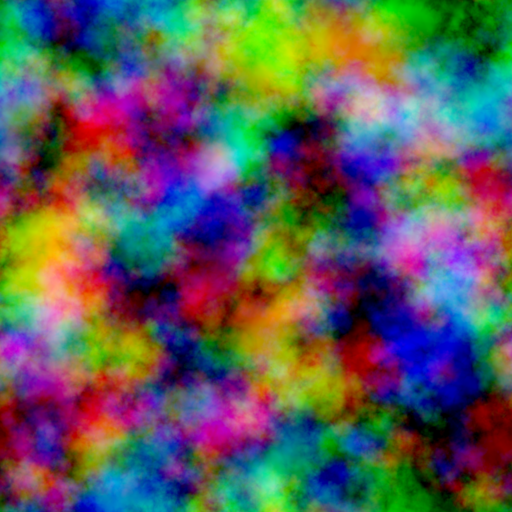
Flowmap Texture
Flowmap setup
Flowmapping is a technique by which we use 2D Vectors stored in the form of a texture to distort of the UV’s of a texture over time. This distortion animation is then looped to give the illusion of flow, it’s commonly used in realtime water shaders to give the look of water flowing around rocks etc, but it can of course be used for lots of other things. In my shader I use it to create a material burning effect. If you would like a better understanding of flowmapping I reccomend reading the Polycount Wiki Entries also check out Simonschreibt’s Flowmap Tutorial as he does a great job of explaining it.
You can see my flowmap setup below

As you can see we have parameters to control distortion strength, Tiling of the Different Textures as well as flow direction.
I use the Red channel’s output from the flowmapped noise to drive my effect, if you preview the Lerp Node, you will see this result

SphereMask
This next step can be handled multiple ways, in the end all it needs to be is a scaling gradient value to drive the effect. In this case, I am using a spheremask driven by blueprint location to drive the mask, this way I can move the blueprint around to affect what areas get burnt, and I can animate the sphere radius to create a burn away cycle. If you would liek to know how to setup a Material Parameter collection to pipe in the BP’s location into the shader I reccomend checking out my Wormhole Shader Breakdown. As I explain it i ndetail there, and I am usign the exact same setup here.
Creating a spheremask is easy as UE4 comes with an in-built function that lets us do jsut that
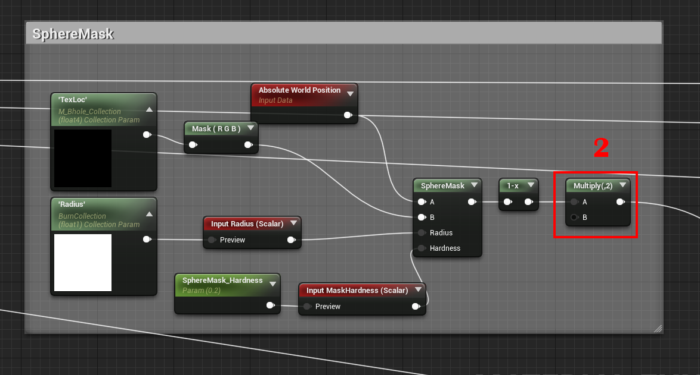
The radius in this case is in World Space Units, so try sscrubbing the radius value and you’ll see this. By default, the location of the sphere mask is {o,o,o}, so you’ll notice the sphere growing from the center of the mesh.
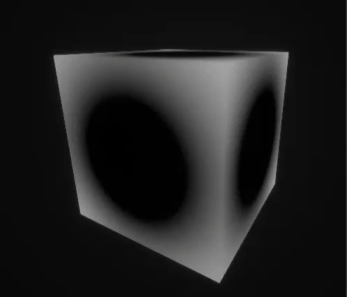
The next step is to create subtract the result from the flowmapped noise from the spheremask so we get a burn like pattern as the mask scales.
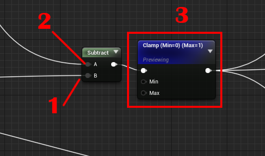
Note that you can adjsut the spheremask hardness parameter to control the amount of spread in the transition
Hardness:0.2
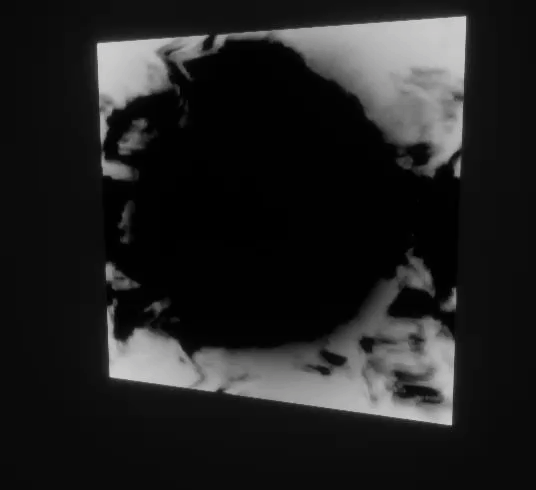
Hardness:0.5
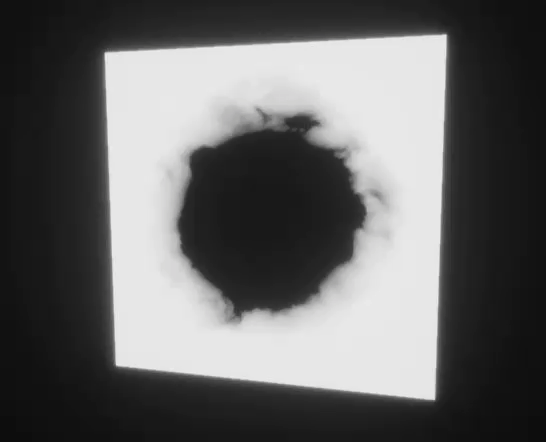
We can now take the result from this network and multiply it by the Opacity Mask input from thet Function input reads to get the Final Opacity Mask
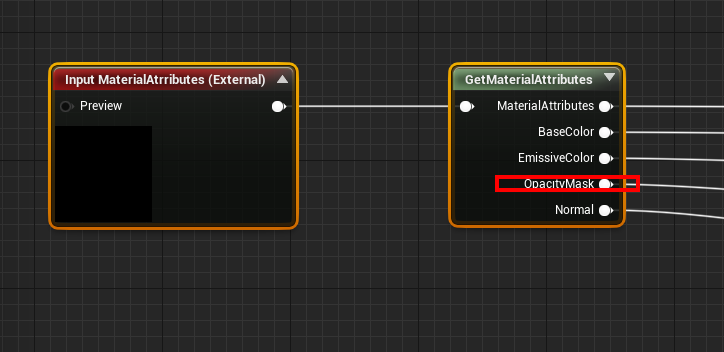
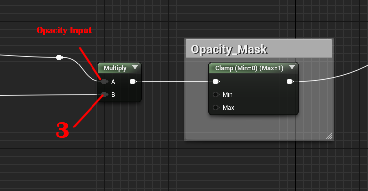
It is good to know that, you could jsut as easily do this effect without the flowmap setup using jsut a static texture, the difference is that the flowmapped version has more motion and has a nice almost anime-esque visual flair. You can see the difference in the mask below.
With flowmap
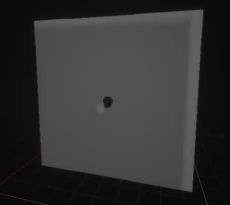
Without flowmap
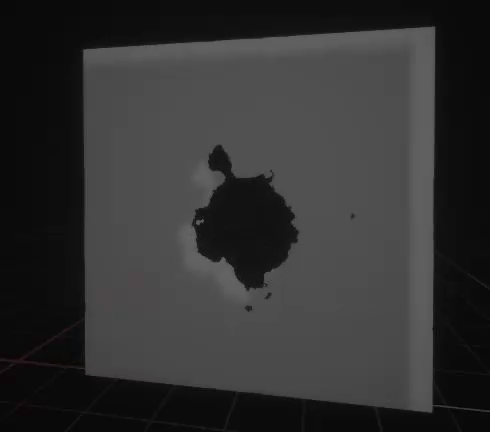
Edge Glow and Charring
To make the Burning edges glow and to have the charred blackish outline, we use a technique that I’ve used in a lot of my shaders previously, where we sample the mask gradient at 0 and create an edge mask using the distance function.
You can see the setup below. The only thing to note here is that in this case we sample at 0.45 for the glow outline and at 0.5 for the charring outline, this is so that they are offset from each other and the charring appears around the glow, we also set a higher width for the charring outline so that it appears outside the glow Outline. We then expose the width inputs as parameters so that we can control the spread as needed.

If you preview the outputs from each of these respectively you should see the following
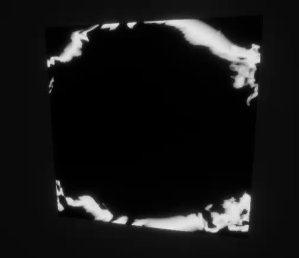

Now we can simply take the result from the emberglow section, multiply it by a flame color and add it to the Emissive color from the Function Input to account for any pre-existing emissive color in whatever shader we use this function in, and use that as our final emissive color.
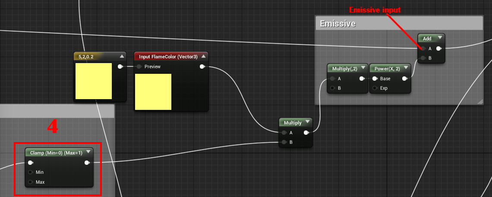
You could alternatively, use the result from the emberglow section as input to map colors based on the gradient. A technique called gradient mapping, and UE4 now has a CurveAtlass feature which lets you define color curves and access them inside the shader, the feature is still a little finicky as I experienced a couple crashes trying to use it in my shader, so i will refrain from using it now, perhaps i’ll cover it in a future post.

Next we take the result from the Charring section and multiply it with the Basecolor from the function input to get the Final Basecolor value
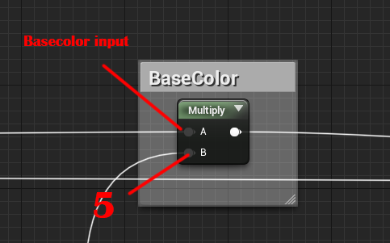
Now you’ll see the edges turn black before they glow and burn
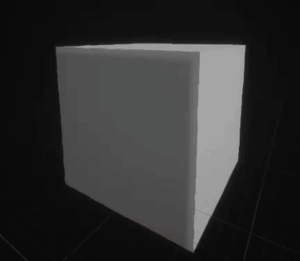
And that’s it we are done.
The really cool part is now we can move the Blueprint around to create the burn area, in a game you could use the location of the players torch or something to drive the effect to make it look like they are burning things away. And we can play with the spheremask hardness and Radius to get the exact look and spread we want. Here’s what it looks like with different settings
Mask Radius: 512 , Spheremask Hardness:0

Mask Radius: 92 , Spheremask Hardness:0.5

Additionally you can animate the Radius to make it look like it’s burning away over time.


Hope you found this useful.Cheers!
关于本文
本文作者 Master Gong Sheng, 许可由 CC BY-NC 4.0.